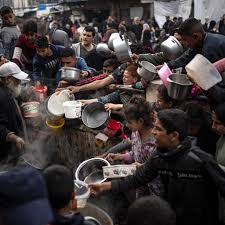
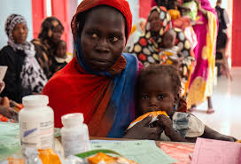

Countries in Urgent Need

Gaza
Help provide emergency food and aid to families affected by conflict and shortages in Gaza.
Explore

Sudan
Support displaced communities facing famine due to conflict and climate disasters in Sudan.
Explore
Somalia
Assist children and families battling extreme hunger caused by drought and food insecurity.
Explore
Ethiopia
Provide lifesaving nutrition to those suffering from malnutrition and famine in Ethiopia.
Explore